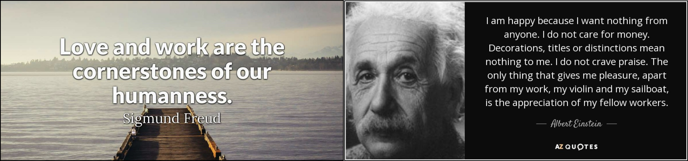

Acknowledgment
Favourite Quotes: - "Love and work are the cornerstones of our humanness". (Sigmund Freud)
- 
THANK YOU!
Life is too short, and we are very lucky to be in this world and we should never stop thinking that "Love and work are the cornerstones of our humanness" (Sigmund Freud). Hence, I want to spend a few words to thank some of the people I love, including the great working environments I have (or had) the possibility to work with. I will use one/two word(s) to summarize them. About my working experience… My P.h.D. studies at the University of Sannio (UoS) represent the period of my life that I call “push” or “run”. I had to do everything very fast and had to work very hard to make a P.h.D. to be proud of. Here I want to thank Gerardo and Massimiliano. Probably, considering my skills and personality, they were the best advisors I could have for my Ph.D. One of my best collaborators and friends at UoS is Andrea Di Sorbo. We started working together from his P.h.D. at the UoS and now he is an associate professor in Italy. He is creative and brilliant, and also a very nice person. More importantly, His working and ethical principles are a quite nice light in this strange, sometimes unfair academic world, thanks, Andrea! In general, I have several friends/colleagues at UoS and abroad, met during my P.h.D. studies, too many to mention one specifically, I thank them all for supporting me during the P.h.D. adventure and for making me feel at home on the few occasions I visited UoS again. My postdoctoral experience at the University of Zurich (UZH) was a rather different period of my life, I call it “flexibility” or “independence”. I had a nice and flexible environment at UZH (maybe too flexible) and I can say that “independence” is quite an important quality to have/gain to make it at UZH. Also here “pushing” myself over my limits was a key aspect. Here I have many people to thank: - Harald, for supporting my research initiatives and for introducing me to the UZH world. During my experience in the SEAL group, I had the opportunity to grow from a professional (and personal) point of view. I am deeply thankful for this experience. Thanks Harald! - All students that I had the pleasure to teach and/or work with. Among them, It was very fun to work with Carol Alexandru. We are good friends now and it is nice to catch up from time to time with him. Thanks Carol! - Mario Caputo for the intense/fun soccer chats about AS Roma, our Favourite Italian soccer team. We meet often and still talk a lot about the AS Roma and other interesting topics. Thanks Mario! - Many other people I started working with during my postdoctoral experience in the EU, USA, ASIA, and Canada (e.g., Giulio Antoniol). About this, during 2017 I had the opportunity to have a research meeting with Prof. Oscar Nierstrasz (UniBe). I consider it, one of the most important meetings of my career/life. Oscar has a unique talent for helping people to focus on themself and their interests, which was critical for me to any successful research projects or proposals afterward. ZHAW, my working environment between 2018 and the summer 2024, was the environment that is linked with the part of my life that I call “relevance” or “impact”: a part of my life that I was more interested to focus mainly on things that are most relevant or can have an impact for me, not only on at a professional level. Here I had quite interesting interactions and good work experience with colleagues (and ex-ZHAW colleagues) such as Sean, Leonardo, Nicolas, Sajad, Christian, Prasun, Maria, Mohammed, Tamara, Teodora, Rafael, Stephan, Yanick, Annette, Conny, Rhiana, Oliver, Leonardo, Giovanni, Jonathan, Thomas, Wissem, Steven, Flavio, Dominique, Jasmin, Andreas, Freja, Gerald, Remo, and many others. One of my best (ex) colleagues and friends met at the ZHAW is Sean Murphy. We worked on several activities that led to the acceptance of the COSMOS H2020 project proposal where I acted as technical coordinator between 2020 and 2024. Besides his technical competence, His working and ethical principles are something I admire of him. Thanks, Sean! I take this opportunity to thank ZHAW for providing a sufficient level of academic freedom for my past and recent professional development. I see myself professionally and personally differently after 5-6 years at ZHAW: the working challenges, obstacles, barriers, and new experiences allowed me to re-think myself in a completely different way, with focus on my self-development. I wish to ZHAW as a whole, continuously grow, with more and more success stories supporting it over time. UniBe, my current working environment (since fall 2024), is an environment that is linked with the part of my life that I call “freedom” or “vision”: a part of my life that I am more interested to focus mainly on realizing (or commit to) the vision of the person I would like to become (not only on a professional level). UniBe seems to be the right place for this (professionally, thanks to Timo Kehrer). This represents conceptually a new chapter of my professional and personal life, I am looking forward to take on the challenges and opportunities for my personal/professional development. Unibe will be the home of the recently accepted projects (https://spanichella.github.io/projects.html) such as - InnoGuard EU Project (Marie Skłodowska-Curie Actions-funded Doctoral Networks") Project (2024-2028) - SNF” project SwarmOps: Human-sensing based MLOps for Collaborative Cyber-physical systems" Such projects will welcome four PhD students positions in Software Engineering & Robotics concerning MLOps for AI-Enabled Cyber-Physical Systems. The focus is to develop cutting-edge research for AI-enabled Cyber-physical systems (AI-CPS) as well as enhance AI-CPS adaptability in complex environments. - In the last 5-6 years I had the opportunity to work with Pooja Rani (my ex PhD student at the University of Bern). We have worked massively since her second year of her P.h.D. studies (I acted as her co-supervisor), and she impressed me in terms of determination, creativity, and kindness. I am pretty sure that we will hear good things about her in the future (independently from the career path she decides to follow). - More in general, I want to thank all other people from academia and industry that I have/had the possibility to collaborate with on project proposals, projects, publications, and the development of tools. Without them I would not be where I am nor where I am heading to. Among them, I am glad to have met Davide Scaramuzza in 2020, a well-known professor in robotics at UZH. I am learning a lot from you, thanks! - In the last years I had the opportunity to work intensively with Paolo Tonella, Domenico Bianculli and Fabrizio Pastore (we worked together on the COSMOS EU project) as well as with Alessio Gambi, Rafael Kallis (we started working also before the COSMOS project), Shaukat Ali, and Aitor Arrieta. So far, I have had an excellent experience with them, they are professional, passionate, and fun to work with. Thank you guys! On a personal side…. The first person from my family that deserves my attention here is my father. He taught me how it is important to build true relationships and he was definitively right, as always was: true relationships make the life of everyone special! He is the person who has always believed in me, I will never forget him, because he is the person who most influenced my life and helped me to find my way. I miss him so much! In a similar way, my mother encouraged me during all the steps of my life, and she was able to teach me how is important to be brave and make important decisions in very critical situations. Her sweetness and her modernity together represent something that can be earned only after a long inner maturation. When I talk with her I think very often that is very difficult to find people with her honesty, her integrity, and her dynamism. Thanks, Mum! My brother Annibale is probably the smartest person I personally know and he has really so many qualities: He got the brain, he got the muscles, he is a good listener, he got the humor, he is empathetic, and I could talk more and more about his qualities. The people who really love you are near you in times of trouble and are able to feel happiness for you when something good happens in your life. Only a few of the people in our life are like this. Annibale, my brother is one of them: Thanks Annibale for being my special twin brother! My sister is a very dynamic person, I admire her ability to come out unscathed from any situation. She is a very sweet woman and lives to help the others. Temperamentally we are very similar and we do not like to take ourselves too seriously. We like to take more seriously the work and take care of the responsibilities that we have. This makes us remarkably similar even in the love life. Thanks Lucia for the wonderful moments together! More generally, I want to briefly thank some of the people I deeply love: my Mum, my Father, my Sister Lucia La Verghetta (and her Husband Michele), my Brother Annibale Panichella. They are what I call "identity": Everything good I was, I am and I will be is mainly the result of their love. I want to thank my old/new neighbors, family, and all my friends in Switzerland, Italy, and other countries. You are a source of significant positive energy for me and I deeply love any moment I have the pleasure to spend with all of you. Finally, “unique” is a recurrent word that I connect with my wife Cristiana Bersaglieri. I deeply believe that there is one unique person that we can actually really love in our lives, no matter the sex/provenance of that person. Cristiana, thanks for being my one